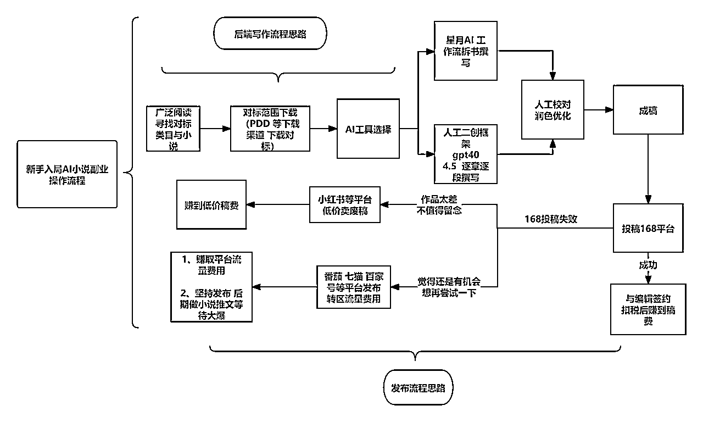
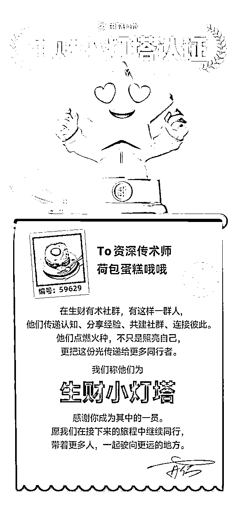

来源：https://lv9qj6hfr4z.feishu.cn/docx/Tcewdg7TMoxvO9xZ54CczEX4nTf
大家好 这里是荷包蛋糕 写作6年 AI赋能3年
在3月份的航海活动中，我有幸担任“AI小说：从写作到变现”这条船的答疑教练。为期21天的航行圆满结束，我也在这段时间里，帮助了不少船员解决在AI小说变现过程中遇到的实际问题，非常感谢盟主君 三月雨和发发教练和我一起完成练练21天的航线 带领1000船员0-1AI小说赛道 贡献了很多精彩的问题回答。
参考小说航海1群 @嘉平六整理出了航海群百问百答，我也特地整理了部分高频关键问题，进行了更加系统、深入的解答。
5月的航海马上就要开启了，虽然好像没有ai小说这条船， 但是我希望这份《百问百答》整理能帮助对AI小说感兴趣的圈友们解决一些常规问题，无痛、顺滑地切入这条赛道，一起开启副业变现之路！
2025年，网络文学行业呈现出强劲的增长态势。数据显示，2023年中国网络文学市场规模已达404.3亿元，同比增长3.8%，作者数量达到2405万人，作品数量突破3620万部，用户规模高达5.37亿人，整体呈现“人多、文多、读者多”的繁荣局面。业内预测，2025年市场规模有望进一步增长至436.1亿元，标志着这一赛道仍具备广阔的商业前景与内容红利，值得内容创作者与创业者深度布局。
对于新手来说，AI小说副业是一条门槛低、路径清晰的变现通道。
（1）通过广泛阅读，找到适合自己的小说类型，并下载对标作品作为素材参考；接着选择合适的AI写作工具（如星月写作、GPT-4等），结合人工润色优化生成内容，完成小说初稿。
（2）向“168平台”投递稿件，若投稿成功，即可与编辑签约，获得稿费收益。即便投稿失败，也可以将作品低价卖给内容平台，发布到番茄、七猫、百家号等渠道，通过流量分成持续变现。

A1：当然可以。
AI小说的核心优势就在于“降门槛”。现在的AI写作工具（如星月、ChatGPT、豆包等）可以帮你完成大部分内容生成，新手只需要懂得基本操作、学会拆解对标小说、进行简单润色，就能跑通从写到投的流程。
很多零基础船员，从0开始学习，到变现只花了2-3周时间。
A2：建议从短篇入手。
短篇（1万～5万字）节奏快、完成周期短，适合练手和熟悉AI操作流程。而长篇（50万字以上）虽然稿费更高，但周期长、要求内容连贯度强，更适合后期进阶。
建议你从短篇练手，逐步探索适合自己的类型和平台。
A3：变现路径有三种：
平台签约：向168平台（如番茄小说、七猫等）投稿，签约成功次月可结算稿费；
流量分成：将内容发布到百家号、小红书、番茄等内容平台，获得播放量、阅读量收益；
低价卖稿：如投稿失败，可将内容在任务平台、小红书等低价出稿，回收写作成本。
A4：不是的。AI小说的一个优势就是“一稿多用”。
即使168平台投稿失败，你依然可以将作品发布到内容平台蹭流量，或打包整理为图文视频稿投放小红书、抖音，甚至转卖给其他博主做素材用。
只要掌握高质量的内容，基本不会白写。
A5：做好对标拆解 + 创意框架 +人工润色三步，就不会轻易撞题。
平台的审核更关注的是“内容质量和市场潜力”，而不是写法是否由AI生成。
你可以通过星月的拆书模板或GPT写作辅助功能，实现“灵魂换皮”，在保留创意的同时，生成原创度较高的内容。
A1：一定要先做大纲！
不做大纲直接生成正文，内容容易跑偏、节奏混乱。建议先让AI协助拆解对标作品或直接生成三段式大纲（起承转合），再按大纲逐段细化。星月写作和ChatGPT都可以通过提示词完成大纲规划，效率高、方向准。
A2：使用“上下文补全法”。
可以通过“上一段+继续写”的方式，给AI输入上下文提示，提高内容衔接度。同时，你也可以使用“章节小标题法”——为每段加上小目标（如“主角冲突”“反派登场”），引导AI写得更有逻辑。
A3：提示词要精简、有意图。
比如：“写一段男主发现女主真实身份的情节，要紧张、悬念强、语句简练。”
另外，建议使用“风格修饰词”+“任务指令”双重结构，让AI更懂你的意图。例如：“模仿爽文风格，写女主霸气反击上司的对话”。
A4：原创性靠“结构差异+细节重写”。
核心办法：用热门梗但换角度表达。比如“霸总追妻”可反转为“女总裁反套路”。你也可以用AI生成多个版本，从中选择差异性较强的内容。此外，合理使用拆书工具（如星月、deepseek）帮助你“灵魂换皮”。
A5：三句话打钩子：悬念 + 反转 + 情绪爆点。
比如：“她本以为是相亲，结果对方是自己上司。”——用一句话制造意外场景；
再加一段对话或事件推动，激发读者情绪。你可以让AI生成3个不同版本，选最抓人的开篇。
A6：换表达方式+重设场景关键词。
AI有时会陷入“语言惯性”，建议你换角度提问，比如“用第一人称写主角内心独白”“加一场冲突升级的对话”等，改变生成路径。同时，也可以换用更清晰的指令模型，如星月的“扩写功能”或ChatGPT的结构化提示词。
A7：使用章节规划法，按阶段推进主线。
建议将整个故事分为：开端（设定+冲突）—中段（推动+反转）—高潮（对抗+决断）—结尾（解决+伏笔）。每部分再细分2-4章，引导AI按结构推进，不会写着写着散掉。
A8：用“内心+动作+环境”三要素渲染情绪。
例如：“她笑了，但指尖却微微颤抖”——外表平静，内心挣扎。你可以让AI生成“描写主角愤怒情绪”的3种风格：细腻型、直接型、对比型，挑最合适的替换模板内容，增强画面感。
A9：用“三查法”：查逻辑、查冲突、查钩子。
A10：加入“感官描写+动作细节+情绪线索”。
比如：“他很生气”可以改成：“他猛地摔下手机，胸口剧烈起伏。”
你可以让AI“重写这段文字，加入细节和情绪”，或提示它“用镜头感的方式写”。另外可以套用“小说描写万能句式”模板，快速美化。
A11：给每个角色设定“说话风格”和“口头禅”。
比如男主冷酷寡言，女主毒舌犀利，你就可以设置模板提示：“以毒舌女主的语气怼人，不带脏话但句句带刺。”你也可以训练AI“模仿某小说人物风格”进行对话生成，区分角色个性。
A12：多“变形”，少“照抄”。
用热门题材，但在设定里做“轻改”：换个主线目标、换个世界背景、换个职业身份；再在语言上加入你自己的风格，比如幽默感、讽刺感、细腻描写。AI可以模仿，但风格塑造还是靠你自己调教。
A13：用“写一休一”法：今天写，明天改。
AI产量快，但人脑的审美和逻辑判断需要时间。建议今天批量生成初稿，明天从头修一遍，逐章优化标题、情节、人物逻辑，这样更容易发现问题也不会疲劳。别试图当天一口气写完+改完，容易崩。
A14：完全可以。
先写个精彩短篇试水，如果数据好，再围绕主角设定扩展：加入前传、支线、反派视角，形成长篇故事架构。你也可以用AI问它：“请帮我基于这篇短文扩展成10万字小说的大纲”，快速生成可写路径。
A15：设定表是关键。
自己建立一个“人物&世界观设定文档”，将主角身份、性格、背景关系等核心信息记录清楚。每次写作都粘贴设定当提示词，提醒AI“保持人设不变”。星月、ChatGPT都支持长期上下文设置或记忆性提示。
A16：提示中加入“模仿平台风格”的指令。
如：“模仿番茄爽文风格写开头，有钩子、有反转”“仿知乎盐言风格，适合女性共鸣+情绪张力强”。你也可以复制平台热门小说片段，让AI学习其句式节奏和语言氛围后再生成自己的内容。
A1：原则上不行，签约属于独家授权。
但番茄的短篇审核机制较宽松，如非爆款一般不会追究。
一稿多投建议修改标题和前三章，重新生成，再投其他平台。尽量避免重复投同内容，保持内容差异性可规避风险。
A2：有两个APP：
A3：这个数字包含所有90天内更新的小说，包括短篇、长篇，甚至只创建书名但未发布正文的作品，也会计入总数。所以不代表真正的“完结/优质”作品数量。
A4：女频用户为主，偏爱“情绪强烈+狗血反转”类故事。
“大学生存指南”这类题材可尝试写成：室友大战、穷人逆袭、恋爱反转、黑红网红等脑洞文形式，贴近现实同时放大情绪点，容易出效果。
A5：1～7天不等，最近审核偏慢。
如果是节假日或审核高峰期，可能超过一周。
可以在后台留言或联系客服加急，但通常无需催，建议耐心等待。
A6：阅读量较快显示，但收益一般要等到下个月结算。
番茄的稿费结算偏慢，属于“后置型平台”，但只要作品保持完读和更新，就会持续累积收益。
A7：可以用AI，但必须“润色到看不出AI味”。
A8：一般7天左右，但可能更久。
知乎的审核由20多位真人制作人进行，稿件多时审核进度会很慢。
你可以主动与编辑沟通催审，或在后台留下写作思路以加深印象。
A9：是的，大多数编辑只看导语+前三章。
这意味着你的开篇质量极为关键，建议先写出爆点或反转，吸引注意。
AI写完后重点打磨开头3段，是决定稿子能否留下的关键。
A10：说明账号信息不完整，需绑定签约人对应的银行卡手机号。
完善信息后即可生效并查看合约。
A11：一般为1～2周内，推荐机制包含数据测试与编辑手动打标签环节，确保内容适配读者群体。你也可以主动与编辑沟通，请求加速推荐。
A12：拼多多搜索“番茄短篇小说下载”有很多资源。
注意选择无需装软件、不需每日签到的服务，评价高的店铺性价比更高。也可购买短期体验套餐，观察使用效果。
A13：168是自动化投稿平台，将你的稿子投给百位编辑。
A14：是的，168投稿平台是付费系统。
它节省了作者筛选、投稿、联络编辑的时间，适合想快速批量投稿的创作者。
建议有初稿积累之后再使用，避免资源浪费。
A15：推荐“文件投稿”方式。
另一种“中转站投稿”易被忽略或打不开，编辑可能会跳过。
用Word文档附件的方式投递更稳妥，阅读和下载都更流畅，投稿命中率更高。
A1：推荐使用“思考者”模型，比较省字数，适合初步拆解。
如果生成内容太短，可以使用“追问功能”补充情节，或切换至 deepseek、Claude 等模型进行更细化补全。
A2：这通常是因为开启了“深度思考”导致计算偏差。建议关闭该功能，并将生成设置控制在 500-800字以内，过长容易水词。若仍不满意，可以切换到Claude模型，生成更稳定。
A3：不是必须会员，只要消费过一次基本就能用。
不过不少用户反映AI起名效果一般，建议生成多个版本或手动优化对照，提升吸引力和风格贴合度。
A4：推荐分段扩写或分剧情点续写，一次扩写3-5个小事件，不要整章塞给AI。若AI抽风，换提示词或切换模型即可。
A5：不同提示词默认视角不同。如果你小说为第三人称，在每次输入中加上“以第三人称叙述，保持风格一致”的限制，星月也支持定制提示词，用于固定视角。
A6：这通常是模型接口问题或提示词中出现乱码。建议切换模型、优化提示词，或清空缓存重新生成。
A7：可以将大纲拆成两部分生成，或使用星月的“AI扩写润色”模块，输入当前段落+希望补充的剧情，让AI“保留原意+增加内容”。
A8：建议使用1号模型，它对封面题文的识别率较高，或者手动加上【封面题文：XXX】作为显性提示，提高识别准确率。
A9：可能是提示词设置不规范，或AI生成格式本身就不兼容。
可以先粘贴到WPS或Word中调整格式，再复制进番茄后台。
Claude生成内容通常较规整，也可替代尝试。
A10：检查第一章开头是否存在空格或格式错误。若格式无误，可退出页面重试或清除缓存后重新加载。
A11：可以通过拼多多购买盐选小说下载站服务，一般2-3元即可获取PDF版本，在本地阅读更便捷。
A12：可以使用“请帮我将这本小说拆解为主线剧情+五章内容结构”这类结构化提示，也可以参考航海手册中的标准提示词组合。
A1：被拒是常态，不写才是失败。
每个写得好的人，背后都有一堆被拒的稿。AI小说更像是模型训练+内容打磨的过程，不是一次性做出完美作品，而是快速试错、持续进化的过程。推荐你把第一阶段当成“练稿期”，重点练：节奏、钩子、情绪点，越投越熟，越写越顺。
A2：你不是AI的“操作者”，你是“导演”。
AI是执行者，它给你的是骨架、原料，而你要做的是加入风格+情绪+个性化表达。试试在写作中加入自己熟悉的经验、观察或偏好，把AI产出当“初稿”，而非终稿。灵魂来自你加进去的那一层“人味”。
A3：前期冷启动是“内容创业”的必经阶段。
别急着用“收益”衡量第一批作品。你现在在做的是：搭建作品池、锻炼结构感、熟悉平台机制、测试题材方向。这些基础一旦打好，作品数据是会突然起飞的。副业就是一场“微创业”，耐心+方法+节奏是核心。
A4：设“小目标+低期待+高频率”。
别给自己设“今天要写5000字”的目标，那样会让你逃避。换成“先写一段开头”或“先写300字看看”，写起来就不难了。启动比完成更重要，每天保持动笔频率，就能养成写作肌肉，效率也会越练越快。
A5：别比速度，先比“是否在路上”。
每个人的起点不同、节奏不同。你看到的“写一篇就爆了”的人，可能已经练了半年、投了几十篇。与其焦虑，不如回到自己的节奏：1周1篇、每月测试一个题材、每次优化一个细节。慢慢写，写着写着就会出成绩。
A1：推荐先选一家平台签约（如番茄、七猫），稳定拿到稿费收益后，再考虑同步投放。签约平台通常默认独家授权，若想“一稿多吃”，建议修改标题与前三章内容，确保平台之间不判定为重复发布。
A2：当然可以。重点看题材和结构是否适合你，评论区内容可以作为参考优化点。尤其当作品点赞数、收藏数还不错时，说明故事本身具备受众，只是表达手法可能存在改进空间。
A3：不建议直接使用真实品牌名称。可使用“音符APP”“短音平台”这类隐晦变体，既避免侵权，也不会触发平台审核风险。
A4：新用户可领取额外5万字免费额度，使用兑换码 AI联盟888 即可解锁。也可以小额充值解锁更多功能，性价比相对较高。
A5：这是平台对“灌水行为”的处理机制。建议此期间暂停发布新作，专注优化现有作品结构和内容质量。合约到期后再重新起号或考虑新平台发布。切忌用新号继续水文，平台风控会识别关联账号。
A6：可以，但需注意以下两种情况：
A7：说明作品吸引力不足，缺乏付费驱动力。建议重点调整前3000-4000字内容，加入强冲突、强情绪或反转桥段。比如家庭伦理冲突、狗血反转、密集矛盾等情节，能有效激发读者“想看后续”的欲望。举例：“爸爸死了，妈妈火了，妈妈一句话让爸爸跳楼”这类极端钩子，能大大提升转化。
A8：多数是中转站链接不兼容或安全提示限制。建议改为直接附件投稿，即上传Word文件而不是发送外部链接。若编辑仍反馈打不开，可手动用邮箱发送，并附带清晰的稿件标题、简介、联系方式。
很多新人误以为AI写作就是“让我省事”，实际上更准确的认知是：AI负责提速，你负责把控方向。
你提供题材、设定、章节意图，它生成内容，但最终结构是否合理、冲突是否精彩、语言是否有感染力，仍需要你的思考和二次加工。
实际上，你真正要学的是一套可复制的流程：拆书 → 大纲 → 写作 → 投放 → 调整。
推荐将AI当成“写作助理”而非“自动写手”，合理利用AI的提纲生成、章节拆解、对话模仿、节奏调整功能，将写作从“0到1”的过程拆解为多个“0.1到0.2”的小任务，再逐一完成，会让整个创作流程既高效又可控。在没有经验的情况下，爆款靠的是“运气”，但稳定产出、长期变现靠的始终是“系统能力”。
建议设定小目标：第一周拆5本对标小说，第二周产出一篇完整短篇，第三周开始投稿测试转化。
跟着节奏走，方法永远比一时的灵感更值钱。
AI小说的变现，本质上是一场“内容适配平台”的商业写作。
很多新手一开始写得很投入，觉得自己故事设定牛、文笔好、情感细腻，但投出去却无人问津。
这并不能证明是你写得差，而是你没写给“对的人看”。
比如番茄小说女频爱“狗血反转+爽感释放”，知乎盐言看重“生活共鸣+文字质感”，而七猫则偏向“类型清晰+节奏紧凑”。
不同平台，读者的阅读习惯、内容调性、推荐机制完全不同。
建议在正式写作前，先“扫榜”一轮，研究你目标平台的热门作品，关注点赞区间、章节长度、开头钩子怎么写。
真正好的写作不是自嗨，是能被读者点开、读完、愿意付费的内容。理解平台=理解变现逻辑
写作是内容资产的积累过程，而不是一次性成果。AI小说的优势在于“低成本高复用”，就算一篇小说没有通过投稿，也不代表它毫无价值。
你可以拆成素材包在短视频平台变现、改写成爆款文案、低价出稿、进阶训练AI模型。
建议你从第一篇开始就建立“作品池”意识：保存所有稿件、记录投放渠道、汇总反馈数据。运营得当，每一篇作品都可以是流量节点、成交脚本或者模型训练数据。
副业真正的长效收益，不在一稿定乾坤，而在持续生产、合理分发和资源管理的复利。
非常感谢生财有术平台 满足了我的分享欲望的同时也可以帮助更多人赚到钱
希望对小说感兴趣的圈友们可以和我一起靠写作赚钱养活自己
别有心理压力，写小说在自己的小世界里构思剧情本身就是件很快乐的事情，还是比较好上手的，拿到第1篇k30就会信心满满 大家一起加油吧！！！
除了百问百答之外 如果还想了解更多ai小说和ai写作技巧的技巧可以回顾我往期精华帖
25年
精华 ：【Ai写作】 我用ai写爽文小说 赚到第一笔小说稿费的故事 https://t.zsxq.com/vE1Vy
24年
精华：【AI写作】针对新手的私域谈单话术技巧与案例分享https://t.zsxq.com/2rCmR、
精华：【Claude绘制SVG图形】新手入门实操教程与结果展示https://t.zsxq.com/zODJI
精华：【AI私域写作变现百问百答】常见问题整理https://t.zsxq.com/1lGDJ
普通：【AI写作】适合新手宝宝们入局的写作提示词指令实操演示https://t.zsxq.com/hPz3V
23年
普通：【 ai写作月入从5位数到6位数了 自营盘搭建分享】https://t.zsxq.com/WHufV
普通：【AI写作变现】分享一下我AI写作变现操盘现状与后期思路https://t.zsxq.com/6g7TX
